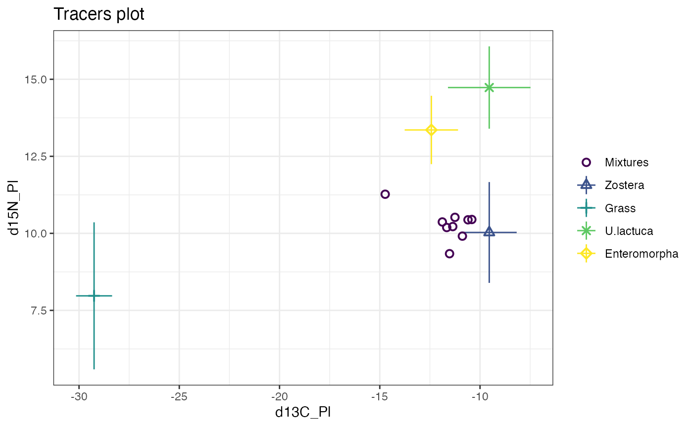
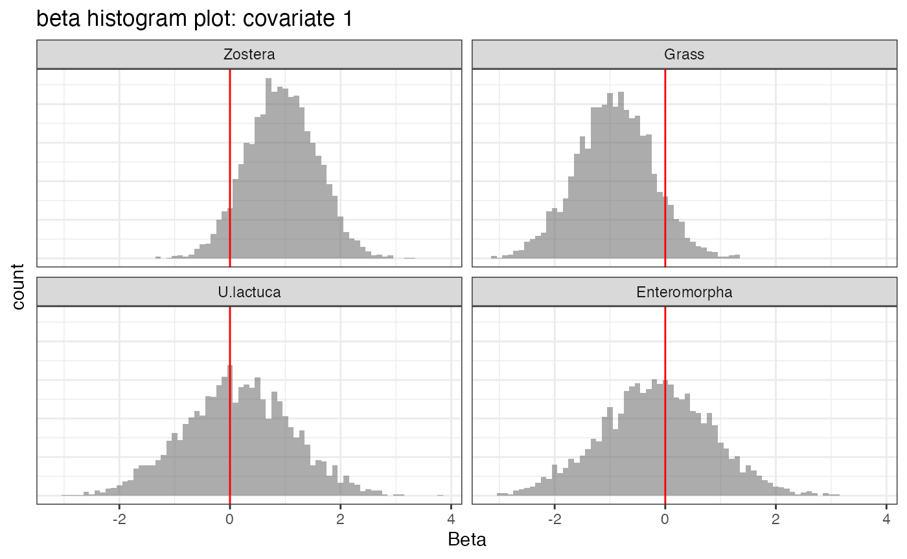

cosimmr.Rmdcosimmr is a package in R designed for running Stable
Isotope Mixing Models in R, using Fixed Form Variational Bayes. The aim
of this vignette is to allow users to quickly learn how to use the
package and giving examples of all the features within the package. If
you find any bugs in the software, or have new features which you think
would be useful, please add this to the Github issues
page
cosimmr package
First, start Rstudio and find the window with the command prompt (the
symbol >). Type
install.packages("cosimmr")It may ask you to pick your nearest CRAN mirror (the nearest site
which hosts R packages). You will then see some activity on the screen
as the cosimmr package and the other packages it uses are
downloaded. The final line should then read:
package 'cosimmr' successfully unpacked and MD5 sums checked
You then need to load the package. Type
library(cosimmr)This will load the cosimmr package and all the
associated packages. You’ll need to type the
library(cosimmr) command every time you start R.
There is some sample data sets (from ADD PAPER REF) available within cosimmr. Use the following command to access one.
data(geese_data_day1)## Warning in data(geese_data_day1): data set 'geese_data_day1' not foundThis data can then be loaded into cosimmr using the function
cosimmr_load
cosimmr_1 <- with(
geese_data_day1,
cosimmr_load(
formula = mixtures ~ 1,
source_names = source_names,
source_means = source_means,
source_sds = source_sds,
correction_means = correction_means,
correction_sds = correction_sds,
concentration_means = concentration_means
)
)## Cannot scale when using mixtures ~1This is a simple example that doesn’t include any covariates. Note
the formula is given in the form
tracer_data ~ covariates.
An isospace plot can be generated using this data
plot(cosimmr_1)
The data can then be run through cosimmr_ffvb, the main
function of the cosimmr package.
cosimmr_1_out = cosimmr_ffvb(cosimmr_1)Summary statistics for the run can then be viewed, several options are available, such as “statistics” and “quantiles”
summary(cosimmr_1_out, type = "statistics")##
## Summary for Observation 1## mean sd
## P(Zostera) 0.492 0.175
## P(Grass) 0.073 0.021
## P(U.lactuca) 0.241 0.134
## P(Enteromorpha) 0.193 0.131
## sd_d13C_Pl 1.071 0.792
## sd_d15N_Pl 0.806 0.649The output of this can be plotted, using the plot function. There are several different options available in the plot function.
plot(cosimmr_1_out, type ="prop_histogram", obs = 1)
For another example, with a continuous covariate, we can look at Alligator data from Nifong et al, 2015. For this example we just use Length as the covariate - but the dataset contains other covariates that can be looked at too. First we load in the data into R - this data is included in cosimmr:
data("alligator_data")Then we use cosimmr_load to create a “cosimmr_in”
object
Length = alligator_data$length
cosimmr_ali <-cosimmr_load(
formula = as.matrix(alligator_data$mixtures) ~ Length,
source_names = alligator_data$source_names,
source_means = as.matrix(alligator_data$source_means),
source_sds = as.matrix(alligator_data$source_sds),
correction_means = as.matrix(alligator_data$TEF_means),
correction_sds = as.matrix(alligator_data$TEF_sds))We then plot our data to make sure our iso-space plot looks good
plot(cosimmr_ali, colour_by_cov = TRUE, cov_name = "Length")Then we can run the mixing model:
cosimmr_ali_out = cosimmr_ffvb(cosimmr_ali)We can then look at a summary of the data. This defaults to individual 1
summary(cosimmr_ali_out, type = "statistics")We can create plots of our data. This code creates a proportion plot and a histogram plot of beta value for individuals 1 and 2
plot(cosimmr_ali_out, type = c("prop_histogram", "beta_histogram"), obs = c(1,2), cov_name = "Length")We can use the predict function to predict proportions for
individuals of lengths 100, 210, and 203 by creating a data frame and
then using the predict function
x_pred = data.frame(length = c(100,210,302))
alli_pred = predict(cosimmr_ali_out, x_pred)“alli_pred” can be treated like a normal cosimmr_out object - we can get summary values for each individual or we can create plots
We can create a covariates_plot to show the change in
consumption of Freshwater as an individual increases in Length
plot(cosimmr_ali_out, type = "covariates_plot", source = "Freshwater", cov_name = "Length")Alternatively we can look at the change in both sources on one plot
plot(cosimmr_ali_out, type = "covariates_plot", cov_name = "Length", one_plot = TRUE, n_pred = 100)